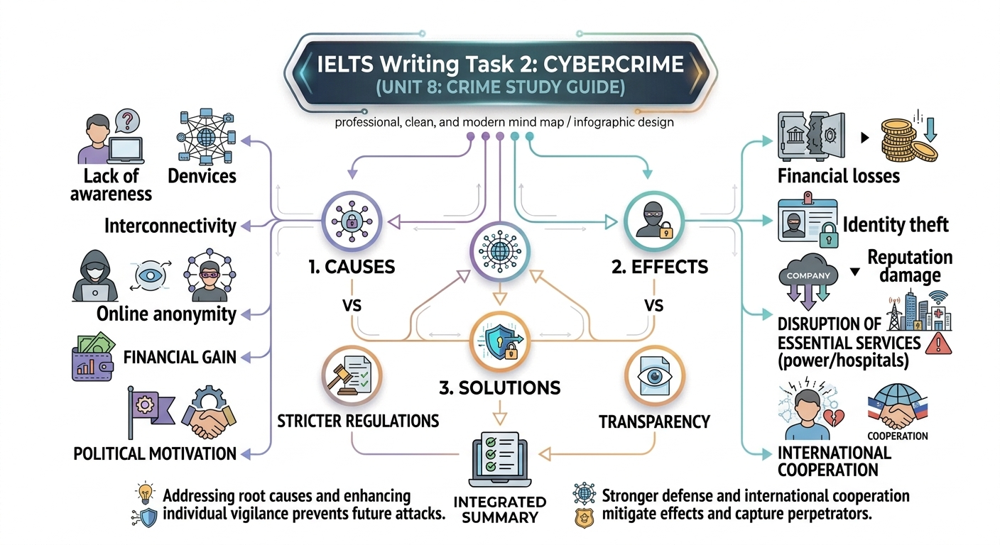

Chuyên đề: Cybercrime - Tội phạm mạng

Phân tích chuyên sâu về nguyên nhân, hệ quả và các giải pháp chiến lược cho bài thi IELTS Writing Task 2.
⚠️ Tác động của Cybercrime
Cybercrime không chỉ dừng lại ở việc mất mát dữ liệu mà còn gây ra những hậu quả nghiêm trọng trên diện rộng, ảnh hưởng từ cá nhân đến an ninh quốc gia.
Kinh tế & Uy tín
- Financial losses: Mất tiền qua thẻ tín dụng hoặc chi phí sửa chữa hệ thống sau tấn công.
- Damage to reputation: Làm xói mòn niềm tin khách hàng (loss of public trust) đối với doanh nghiệp/chính phủ.
An ninh & Cá nhân
- Identity theft: Đánh cắp số an sinh xã hội, mật khẩu để trục lợi bất chính.
- Critical Infrastructure: Tấn công lưới điện (power grids), bệnh viện, đe dọa trực tiếp đến tính mạng.
Sơ đồ hóa các hệ lụy (Effects)
🛡️ Giải pháp chiến lược (Solutions)
"Stringent regulations and legal frameworks"
Ban hành các khung pháp lý và quy định chặt chẽ hơn.
"Cybersecurity technologies and infrastructure"
Đầu tư vào cơ sở hạ tầng an ninh mạng tiên tiến.
"Cybersecurity best practices"
Nâng cao nhận thức và giáo dục cho người dân.
💡 Pro Tip from Phạm Tiến Dũng Gia Sư:
Trong bài viết Solutions, hãy luôn đề cập đến "International Cooperation" vì tội phạm mạng không có biên giới quốc gia. Điều này giúp tăng tính thuyết phục cho bài luận Band 8+.
Bảng tổng hợp từ vựng chuyên sâu
| Category | Key Collocations (High Band) | Meaning |
|---|---|---|
| Causes | Interconnectivity of devices | Sự kết nối lẫn nhau của các thiết bị |
| Effects | Erode public trust | Làm xói mòn niềm tin công chúng |
| Effects | Psychological distress and trauma | Khủng hoảng và chấn thương tâm lý |
| Solutions | Transparency and accountability | Tính minh bạch và trách nhiệm giải trình |
Luyện tập thực chiến (Practice)
Sample Argument by Phạm Tiến Dũng Gia Sư:
"Due to this unhappy childhood, children become more vulnerable to cognitive distortion; they tend to have low-esteem, think more negatively, feel worthless, and consider social offenses a way to prove their worth to the world."
"For more serious crimes, technological advancements play a crucial role in bringing justice to the victims. For example, a cold case was recently solved using DNA technology, whereas in the past, law enforcement had to rely on unreliable human memories."
Bài tập củng cố (Fill in the blanks)
Cybercriminals may steal personal information, such as social security numbers, which they can use for (1) _________ _________.